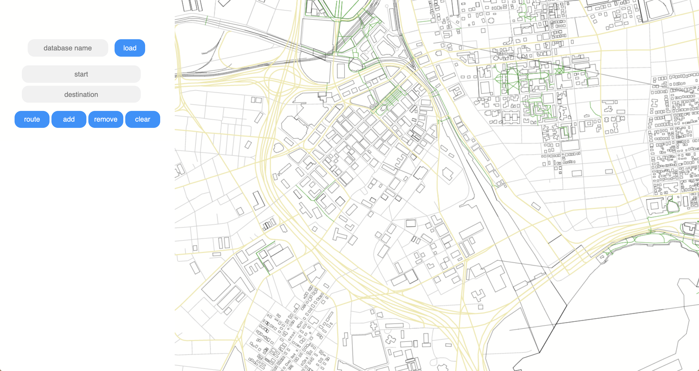
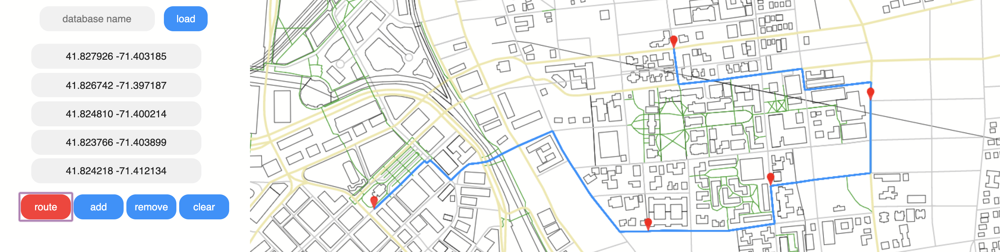

maps
I worked on Maps, a full-stack version of Google Maps, with a partner as the final project for CS0320 Introduction to Software Engineering. The project was a culmination of a semester’s worth of code and concepts. The challenge was to adapt our code from previous projects, as well as, design a graphical interface.
For the backend, I was in charge of integrating two of my past programs: autocorrection and path-finding.
I was responsible primarily for user input features. I customized the autocomplete suggestions to include the intersecting streets of the input street. Using SQL and Java, I wrote queries to optimize the retrieval of data, in addition to caching.
I extended the path finding functionality to include multiple destinations. Users can select destinations by either entering them as a field in the search bar or dropping a pin on the map. Destinations can be added and removed dynamically, up to five. Once a route is clicked, the shortest path between each of the coordinates is calculated using Dijkstra’s.
I retrofitted the server to both receive traffic data and send it concurrently. Since I used multiple threads for efficiency, it was a challenge to make sure they didn’t modify the same data structure at the same time. Traffic data is updated in real time, and highlighted accordingly.
Although these were the most complex parts of the project, I also enjoyed slaving over the minutiae. From making the zooming and panning smooth to styling the streets to be colored and stroked differently based on importance, I had a lot of fun iterating over the interface’s details.
This project was by far the most extensive piece of software I’ve ever written before. Working on it taught me a lot about workflow and communication. I learned that these two things should always be kept open and fluid as possible.
Looking back, I’m grateful for how much this project pushed me out of my comfort zone. From optimizing SQL queries to debugging Dijkstra’s, each challenge has not only engrained in me important concepts, but also how to be confident in my own abilities to figure things out.
Due to academic purposes, I can’t release this code publicly. For interviewing and recruiting purposes, you can email mea to view it.